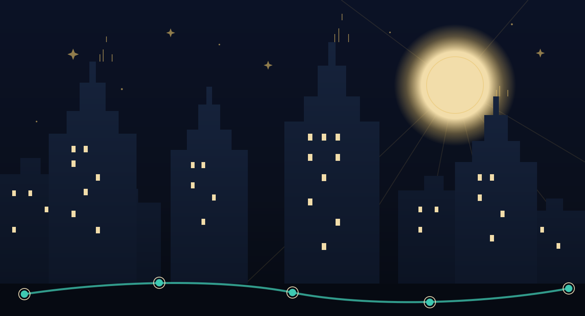

AboutO inicijativi
Built in the order that respect requires.
Izgrađeno redoslijedom koji poštovanje zahtijeva.
Website first, so facts are findable. Story second, so the system gap becomes felt. Petition third, so public support follows understanding.
Prvo stranica, da činjenice budu pronalazive. Zatim priča, da se rupa u sustavu osjeti. Tek onda peticija, da javna podrška slijedi razumijevanje.
Educational prototype. This is not medical advice. For personal medical decisions, contact qualified healthcare professionals or official services.Edukativni prototip. Ovo nije medicinski savjet. Za osobne medicinske odluke obratite se kvalificiranim zdravstvenim djelatnicima ili službenim izvorima.
This is an independent educational prototype. It is not an official website of HUHIV, HZJZ, CheckPoint Zagreb, any clinic, or any government institution.Ovo je neovisni edukativni prototip. Ovo nije službena stranica HUHIV-a, HZJZ-a, CheckPointa Zagreb, bilo koje klinike ili državne institucije.
Responsible organizer: not assigned yet. This prototype should not be used as a public campaign until a responsible organizer or organization is named.Odgovorni organizator: još nije određen. Ovaj prototip ne bi se trebao koristiti kao javna kampanja dok se ne navede odgovorna osoba ili organizacija.
Medical review status: Not medically reviewed yet. Content must be checked by qualified professionals before public campaign launch.Status medicinske provjere: Još nije medicinski pregledano. Sadržaj mora provjeriti kvalificirana stručna osoba prije javnog pokretanja kampanje.
Last updated: 2026-07-04Zadnje ažurirano: 2026-07-04
Why a story instead of a leafletZašto priča umjesto letka
Facts about PEP's 72-hour window fit in one sentence, and leaflets have carried that sentence for years. What a leaflet cannot do is put you at 2:47 a.m. with eleven arguing browser tabs, or in a small-town waiting room where the nurse knows your neighbour. Three Nights exists to make the navigation problem — not the medicine — the thing people remember, because navigation is what the petition can actually change.
Činjenice o PEP-ovu roku od 72 sata stanu u jednu rečenicu i letci je nose godinama. Ono što letak ne može jest smjestiti te u 2:47 ujutro s jedanaest posvađanih kartica preglednika ili u čekaonicu malog grada gdje sestra poznaje tvoju susjedu. Tri noći postoje da problem navigacije – a ne lijek – postane ono što ljudi pamte, jer je navigacija ono što peticija stvarno može promijeniti.
What the prototype includesŠto prototip uključuje
A fully bilingual (HR/EN) static site with no build step; an episodic, choice-driven story with three nights and original characters; cautious, reference-backed health copy; and a design system in night Art Deco built with plain HTML, CSS and JavaScript.
Potpuno dvojezičnu (HR/EN) statičnu stranicu bez build-koraka; epizodnu priču s odlukama, tri noći i izvornim likovima; oprezan zdravstveni tekst potkrijepljen referencama; i dizajnerski sustav u noćnom ar dekou izgrađen običnim HTML-om, CSS-om i JavaScriptom.
What it deliberately leaves outŠto namjerno izostavlja
Health forms, signatures, medical specifics such as drug names or dosing, claims about concrete Croatian services and hours, and any statement of official partnership — each belongs to the launch phase, with expert review and named responsible organizers.
Zdravstvene obrasce, potpise, medicinske pojedinosti poput naziva lijekova i doziranja, tvrdnje o konkretnim hrvatskim službama i radnim vremenima te bilo kakvu tvrdnju o službenom partnerstvu – sve to pripada fazi pokretanja, uz stručnu provjeru i imenovane odgovorne organizatore.
Current statusTrenutačni status
This is an independent educational prototype. It is not an official HUHIV, CheckPoint, HZJZ or clinic website, and it does not yet have a public petition organizer, press contact or completed medical review.
Ovo je neovisni edukativni prototip. Nije službena stranica HUHIV-a, CheckPointa, HZJZ-a ni klinike, i još nema javnog organizatora peticije, kontakt za medije ni dovršen medicinski pregled.
Before public launchPrije javnog pokretanja
- Medical review of every health statement, in both languages, by qualified professionals.Medicinska provjera svake zdravstvene tvrdnje, na oba jezika, od strane kvalificiranih stručnjaka.
- Named responsible organizer, public contact and confirmed permission for any use of CheckPoint naming in advocacy materials.Imenovani odgovorni organizator, javni kontakt i potvrđeno dopuštenje za svako korištenje naziva CheckPoint u zagovaračkim materijalima.
- Verification with organizations running real services, so descriptions, hours, locations and offers match reality.Provjera s organizacijama koje vode stvarne usluge, kako bi opisi, radno vrijeme, lokacije i ponuda odgovarali stvarnosti.
- A vetted external petition platform with clear privacy terms, linked from the petition page only when ready.Provjerena vanjska platforma za peticije s jasnim uvjetima privatnosti, povezana sa stranice peticije tek kad je spremna.